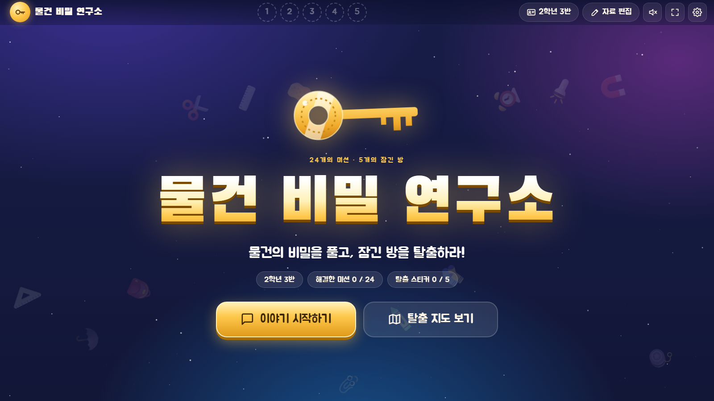
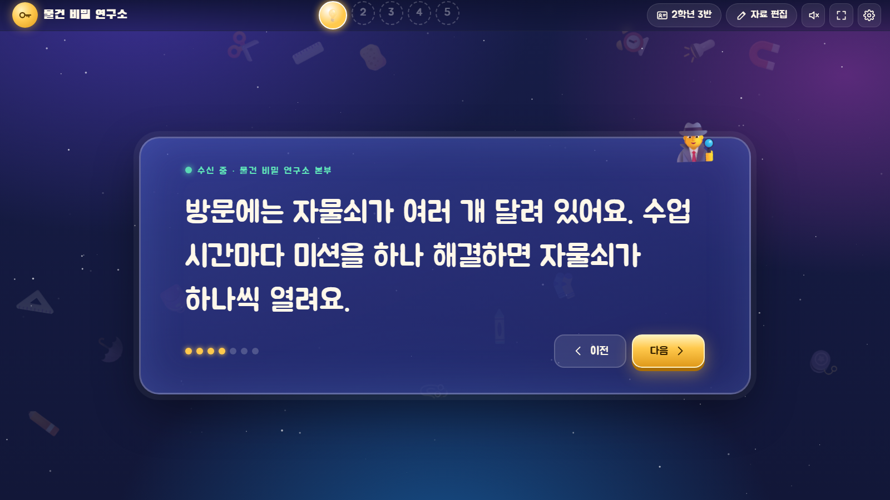
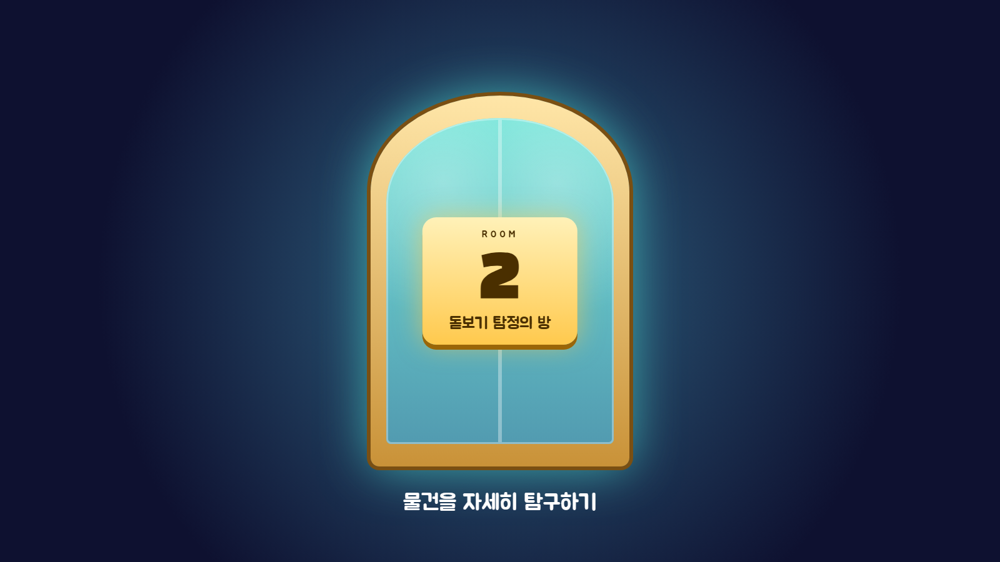
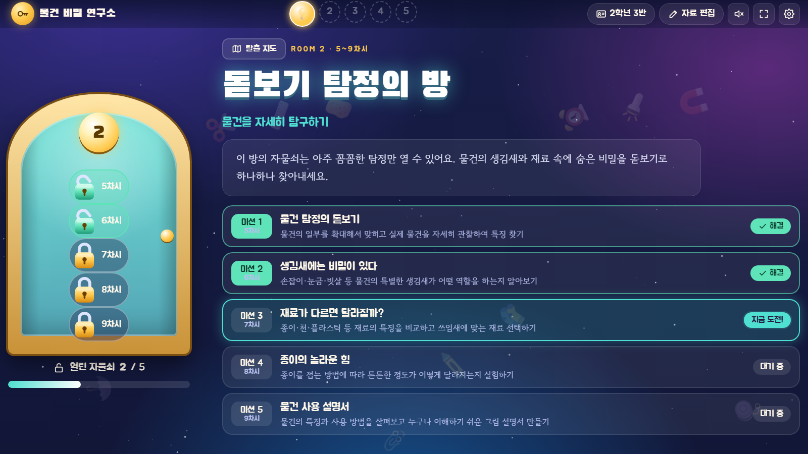
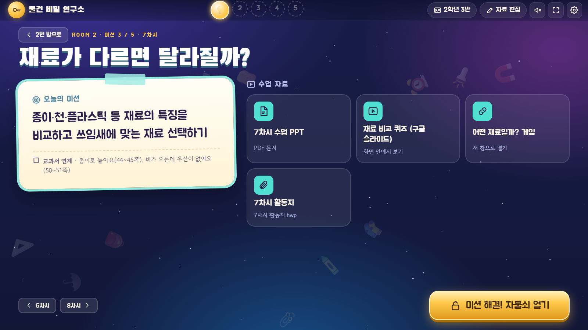
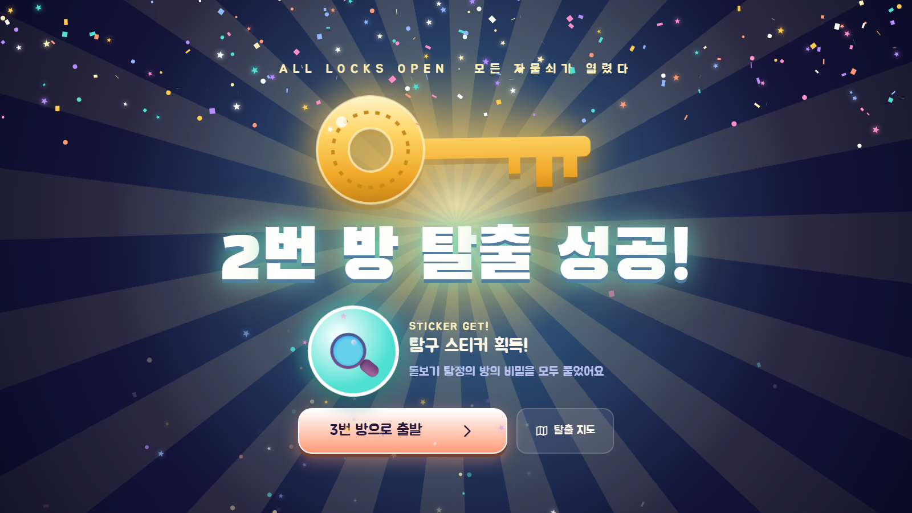
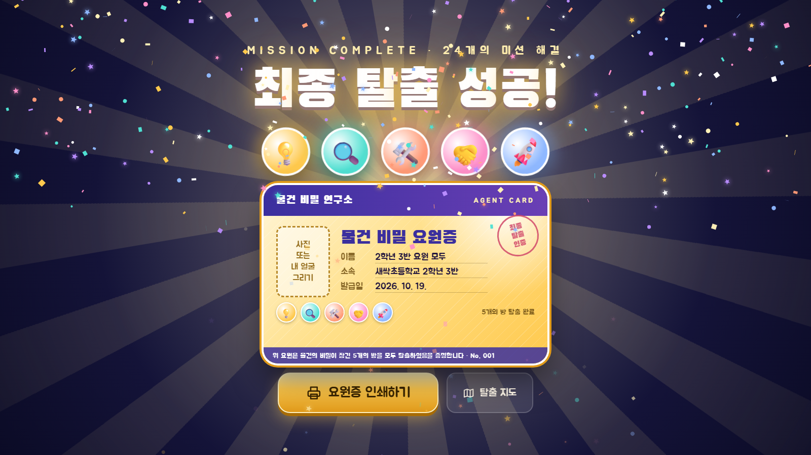
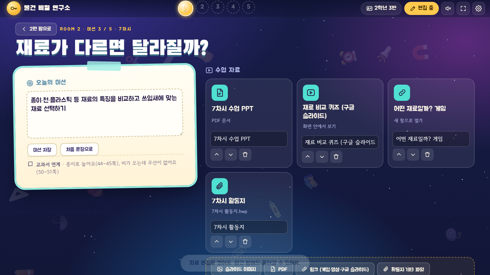
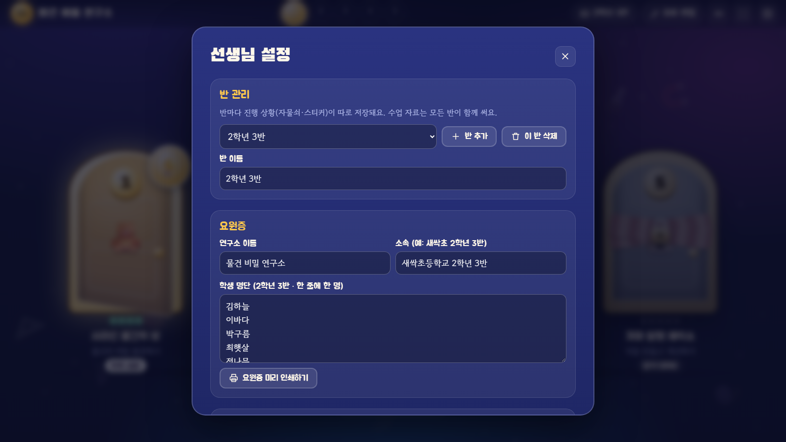

수업 흐름
도입 이야기로 시작해서 1번 방부터 차례로 들어가요. 앞 방을 탈출해야 다음 방 문이 열려요. 각 차시는 앱 안에서 PPT, 게임, 활동지로 진행해요.
- 1💡사라진 물건의 방물건의 비밀 발견하기 · 1~4차시
- 2🔍돋보기 탐정의 방물건을 자세히 탐구하기 · 5~9차시
- 3🛠️불편함 수사 본부생활 속 불편함 해결하기 · 10~14차시
- 4🤝모두의 마을모두를 위한 물건 생각하기 · 15~19차시
- 5🚀꼬마 발명 제작소직접 만들고 개선하기 · 20~24차시
화면 둘러보기
수업 한 사이클이 이렇게 흘러가요.







시작하기
설치나 회원가입은 필요 없어요. 교실 컴퓨터의 크롬이나 엣지에서 열면 돼요.
앱 열기
앱 주소를 교실 컴퓨터 브라우저에서 열고 즐겨찾기에 추가해 두세요. 인터넷이 불안정한 교실이라면 앱 화면에서 Ctrl+S로 저장한 파일을 열어도 똑같이 동작해요.
반 이름과 학생 명단 넣기
오른쪽 위 톱니바퀴(설정)에서 반 이름, 소속(학교·학년·반), 학생 명단을 넣어요. 여러 반을 가르치시면 반 추가로 반마다 진행 상황을 따로 관리할 수 있어요.
수업 자료 넣기
위쪽 자료 편집을 켜고 차시마다 PPT, 게임 링크, 활동지를 넣어요. 미리 다 넣지 않아도 돼요. 수업 전날 그 차시만 넣어도 충분해요.
첫 시간: 이야기 시작하기
이야기 시작하기를 누르고 → 또는 스페이스로 넘기면 마지막에 1번 방으로 들어가요. 전체 화면은 F.
수업 자료 넣기
자료 편집을 켜고 차시 화면 아래의 버튼으로 넣어요. 넣은 자료는 이름 바꾸기, 순서 바꾸기, 지우기가 돼요.

| 종류 | 이렇게 넣어요 |
|---|---|
| 슬라이드 이미지 (가장 추천) | PowerPoint에서 파일 → 내보내기 → 파일 형식 변경 → PNG를 고르고 "모든 슬라이드"로 저장해요. 생긴 이미지를 한꺼번에 선택해 올리면 앱 안에서 전체 화면으로 넘기며 수업할 수 있어요. |
| PPT를 PDF로 저장해서 올려도 돼요. 앱 안에서 바로 열려요. | |
| 링크 | 구글 슬라이드·캔바·유튜브는 이 화면 안에서 띄우기, 게임 사이트(띵커벨, 클래스카드 등)는 새 창으로 열기를 골라요. |
| 활동지·기타 파일 | 한글(.hwp), PPT 원본 등 어떤 파일이든 넣어 두면 누를 때 내려받아 열려요. |
슬라이드 순서 · 파일 이름 순서(슬라이드1, 슬라이드2, … 슬라이드10)대로 자동 정렬돼요. 나중에 몇 장 더 넣고 싶으면 자료 카드의 + 버튼을 누르세요.
구글 슬라이드 · 공유 설정이 "링크가 있는 모든 사용자"여야 앱 안에 보여요.
수업 진행
탈출 지도 → 방 → 차시 순서로 들어가서, 수업이 끝나면 미션 해결! 자물쇠 열기를 눌러요. 방으로 돌아가면서 그 차시 자물쇠가 열려요. 방의 마지막 자물쇠가 열리면 탈출 장면이 저절로 나와요.
| 키 | 하는 일 |
|---|---|
| → 스페이스 Page Down | 다음 슬라이드 · 다음 이야기 (프레젠터 리모컨도 돼요) |
| ← Page Up | 이전 슬라이드 · 이전 이야기 |
| Home End | 첫 슬라이드 · 마지막 슬라이드 |
| F | 전체 화면 켜고 끄기 |
| Esc | 슬라이드 닫기 · 설정 창 닫기 |
실수로 눌렀다면 · 자료 편집을 켜면 차시 화면에 해결 취소하기가 보여요. 잠긴 방에도 들어갈 수 있어서 수업 순서를 바꿔야 할 때 써요.
소리 · 효과음은 오른쪽 위 스피커 버튼으로 끄고 켜요.
반 관리와 요원증
설정에서 반 추가를 누르면 반마다 자물쇠와 스티커가 따로 기록돼요. 수업 자료는 모든 반이 함께 써요. 오른쪽 위의 반 이름을 눌러 언제든 바꿀 수 있어요.
요원증은 최종 탈출 화면이나 설정 → 요원증 미리 인쇄하기에서 인쇄해요. 학생 명단 한 줄이 요원증 한 장이 되고, 명단이 비어 있으면 이름 칸이 빈 요원증 8장이 나와요.
인쇄 팁 · 인쇄 창의 "추가 설정"에서 배경 그래픽을 켜야 색이 나와요. 두꺼운 종이에 인쇄해서 코팅하면 진짜 요원증 같아요. 사진 칸에는 학생이 자기 얼굴을 그려 넣어요.

저장과 백업
진행 상황과 올린 자료는 인터넷 어딘가가 아니라 지금 쓰는 컴퓨터의 그 브라우저 안에 저장돼요. 학생 명단도 밖으로 나가지 않아요.
- 같은 컴퓨터, 같은 브라우저로 열면 지난 시간 상태 그대로 이어져요.
- 다른 컴퓨터로 옮기려면 설정 → 백업 파일 내보내기로 받은 파일을 새 컴퓨터에서 백업 파일 불러오기 하세요.
- 브라우저 방문 기록을 "쿠키 및 사이트 데이터"까지 지우면 기록이 사라질 수 있어요. 자료를 많이 넣었다면 가끔 백업해 두세요.
- 동료 선생님께 내 자료를 통째로 나눠 드리고 싶을 때도 백업 파일을 보내면 돼요.
차시 구성표
교과서 20개 주제를 24차시로 재구성했어요. 미션 문장은 자료 편집에서 바꿀 수 있어요.
| 방 | 차시 | 주제 | 주요 활동 |
|---|---|---|---|
| 1 사라진 물건의 방 | 1 | 물건이 사라진 세상 | 물건이 사라진 교실에서 불편한 점을 찾고 물건이 필요한 이유 생각하기 |
| 2 | 물건에는 이유가 있다 | 물건이 어떤 필요와 불편함을 해결하려고 만들어졌는지 추리하기 | |
| 3 | 같은 일을 하는 다른 물건 | 쓰임새는 비슷하지만 모양이 다른 물건 비교하고 알맞은 물건 고르기 | |
| 4 | 물건의 변신 | 옛날과 오늘날의 물건을 비교하며 달라진 모습과 이유 알아보기 | |
| 2 돋보기 탐정의 방 | 5 | 물건 탐정의 돋보기 | 물건의 일부를 확대해 맞히고 실제 물건을 자세히 관찰하기 |
| 6 | 생김새에는 비밀이 있다 | 손잡이·눈금·빗살 등 특별한 생김새의 역할 알아보기 | |
| 7 | 재료가 다르면 달라질까? | 종이·천·플라스틱 등 재료의 특징 비교하고 알맞은 재료 고르기 | |
| 8 | 종이의 놀라운 힘 | 접는 방법에 따라 종이가 얼마나 튼튼해지는지 실험하기 | |
| 9 | 물건 사용 설명서 | 누구나 이해하기 쉬운 그림 설명서 만들기 | |
| 3 불편함 수사 본부 | 10 | 발명은 어디서 시작될까? | 발명품의 개선 전후를 비교하고 해결한 불편함 알아보기 |
| 11 | 불편함 수사대 | 필통·가방·책상 등에서 불편했던 경험 찾기 | |
| 12 | 발명의 세 가지 마법 | 더하기·빼기·바꾸기를 생활 속 물건에 적용하기 | |
| 13 | 지우개를 잃어버리지 않으려면? | 여러 해결 방법을 비교하고 알맞은 해결책 고르기 | |
| 14 | 내 물건 업그레이드 | 내 물건의 불편함을 해결할 새 물건 구상하고 설계하기 | |
| 4 모두의 마을 | 15 | 나에게 쉬운 일이 모두에게 쉬울까? | 사람과 상황에 따라 같은 물건도 불편할 수 있음을 알기 |
| 16 | 친절한 물건의 비밀 | 자동문·문손잡이·안내 표지 등 모두를 위한 물건 살펴보기 | |
| 17 | 우리 교실 불편함 지도 | 교실을 관찰하며 개선이 필요한 곳 찾기 | |
| 18 | 모두를 위한 작은 발명 | 교실의 불편함을 해결할 물건이나 환경 개선 방법 구상하기 | |
| 19 | 우리의 생각을 실제로 바꾸기 | 공용 물건 위치·안내 표시를 실제로 바꾸고 전후 비교하기 | |
| 5 꼬마 발명 제작소 | 20 | 버려지는 물건의 두 번째 인생 | 휴지심·종이컵·상자의 특징과 새 쓰임새 생각하기 |
| 21 | 놀잇감 설계 연구소 | 만들 놀잇감을 정하고 재료와 구조 계획하기 | |
| 22 | 나만의 놀잇감 제작소 | 주변 물건과 재활용품으로 놀잇감 만들기 | |
| 23 | 실패해도 괜찮아, 다시 도전! | 놀잇감을 시험하고 부족한 부분 고치기 | |
| 24 | 튼튼한 물건의 비밀 | 종이 구조물이 견디는 무게를 비교하며 더 튼튼하게 개선하기 |
자주 묻는 질문
PPT 파일(.pptx)을 그대로 올리면 안 되나요?
브라우저는 PPT 파일을 직접 보여 주지 못해요. 이미지(PNG)나 PDF로 저장해서 올리면 앱 안에서 바로 넘기며 수업할 수 있어요. 애니메이션이 꼭 필요한 슬라이드는 PPT 원본을 "활동지·기타 파일"로 넣어 두고 눌러서 PowerPoint로 여세요.
학생들이 각자 태블릿으로 쓰는 앱인가요?
아니요. 선생님 컴퓨터를 TV나 전자칠판에 띄워 반 전체가 함께 탈출하는 방식이에요.
인터넷이 없어도 되나요?
한 번 연 뒤에는 대부분 동작해요. 글꼴과 외부 링크(유튜브, 게임 사이트)만 인터넷이 필요해요. 완전히 오프라인으로 쓰려면 앱 화면에서 Ctrl+S로 저장한 파일을 쓰세요. 이때 저장 위치가 달라지므로 기존 기록은 백업 파일로 옮겨 주세요.
우리 학교 상황에 맞게 이야기와 미션을 바꿀 수 있나요?
네. 도입 이야기는 설정에서, 차시별 미션 문장은 자료 편집을 켠 차시 화면에서 바꿀 수 있어요. 연구소 이름도 바꿀 수 있어요.
다른 학년이나 다른 단원에도 쓸 수 있나요?
지금은 '물건' 단원 24차시에 맞춰져 있어요. 차시 수와 주제 자체를 바꾸려면 앱 파일(index.html) 위쪽의 수업 데이터를 고쳐야 해요.